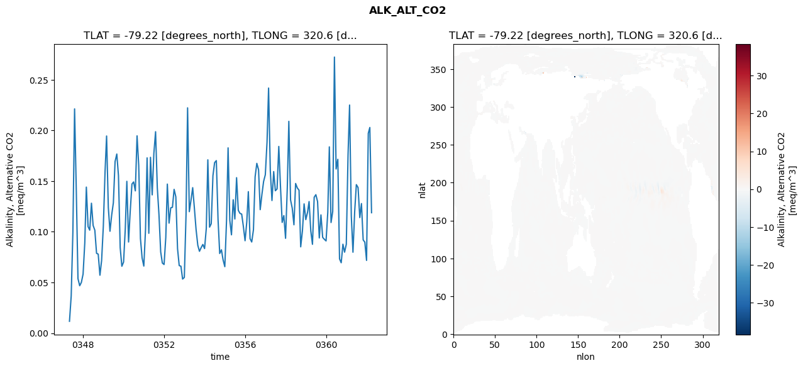
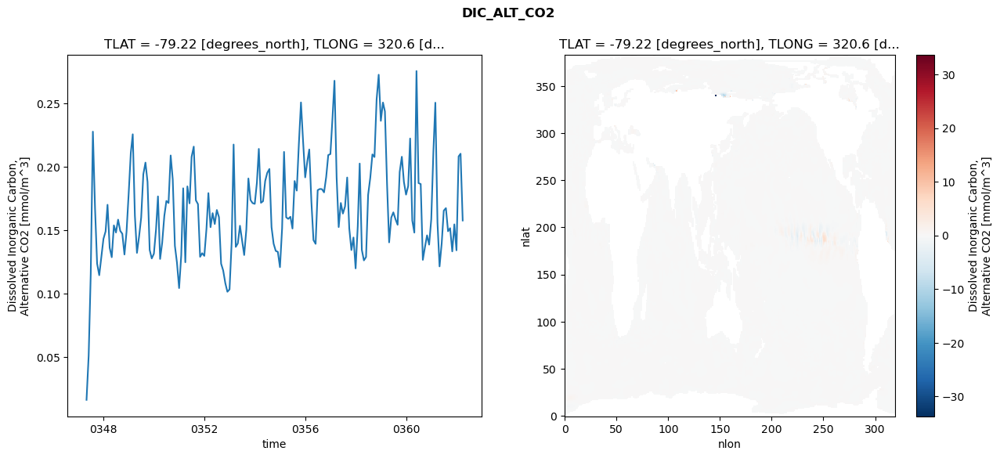
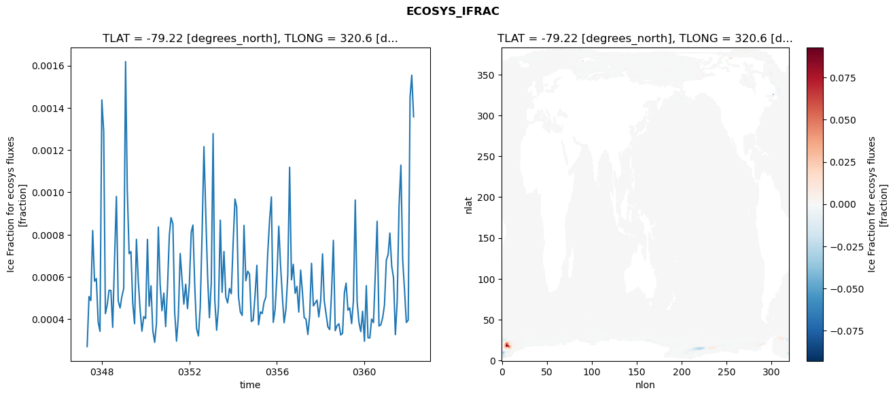
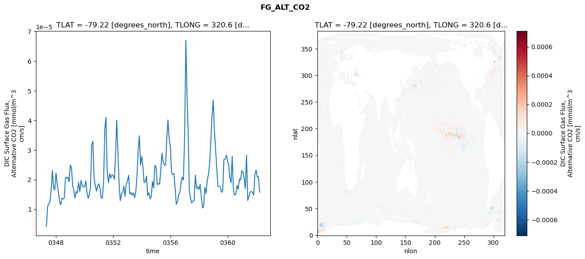

glb-dor_North_Atlantic_basin_015_1999-04-01_00061#
Simulation details#
Case: smyle.cdr-atlas-v0.glb-dor_North_Atlantic_basin_015_1999-04-01_00061.001
Basin: North_Atlantic_basin
Polygon: 15.0
Start date: 1999-04
Show code cell source Hide code cell source
import xarray as xr
import matplotlib.pyplot as plt
Show code cell source Hide code cell source
zarr_store = "/path/to/zarr/store"
# Parameters
zarr_store = "/global/cfs/projectdirs/m4746/Projects/Ocean-CDR-Atlas-v0/data/validation/smyle.cdr-atlas-v0.glb-dor_North_Atlantic_basin_015_1999-04-01_00061.001.validation.zarr"
Show code cell source Hide code cell source
%%time
ds_o = xr.open_zarr(zarr_store).compute()
ds_o
CPU times: user 688 ms, sys: 488 ms, total: 1.18 s
Wall time: 1.42 s
<xarray.Dataset> Size: 2MB
Dimensions: (nlat: 384, nlon: 320, time: 180)
Coordinates:
TLAT float64 8B -79.22
TLONG float64 8B 320.6
ULAT float64 8B -78.95
ULONG float64 8B 321.1
* time (time) object 1kB 0347-05-01 00:00:00 ... 0362-04-01 0...
z_t float32 4B 500.0
Dimensions without coordinates: nlat, nlon
Data variables:
ALK_ALT_CO2_diff (nlat, nlon) float32 492kB nan nan nan ... nan nan nan
ALK_ALT_CO2_rmse (time) float64 1kB 0.01167 0.03675 ... 0.2029 0.1188
DIC_ALT_CO2_diff (nlat, nlon) float32 492kB nan nan nan ... nan nan nan
DIC_ALT_CO2_rmse (time) float64 1kB 0.01627 0.05122 ... 0.2104 0.1577
ECOSYS_IFRAC_diff (nlat, nlon) float32 492kB nan nan nan ... nan nan nan
ECOSYS_IFRAC_rmse (time) float64 1kB 0.0002705 0.0005072 ... 0.001357
FG_ALT_CO2_diff (nlat, nlon) float32 492kB nan nan nan ... nan nan nan
FG_ALT_CO2_rmse (time) float64 1kB 4.294e-06 1.105e-05 ... 1.574e-05xarray.Dataset
- nlat: 384
- nlon: 320
- time: 180
- TLAT()float64-79.22
- long_name :
- array of t-grid latitudes
- units :
- degrees_north
array(-79.22052261)
- TLONG()float64320.6
- long_name :
- array of t-grid longitudes
- units :
- degrees_east
array(320.56250892)
- ULAT()float64-78.95
- long_name :
- array of u-grid latitudes
- units :
- degrees_north
array(-78.95289509)
- ULONG()float64321.1
- long_name :
- array of u-grid longitudes
- units :
- degrees_east
array(321.12500894)
- time(time)object0347-05-01 00:00:00 ... 0362-04-...
- bounds :
- time_bound
- long_name :
- time
array([cftime.DatetimeNoLeap(347, 5, 1, 0, 0, 0, 0, has_year_zero=True), cftime.DatetimeNoLeap(347, 6, 1, 0, 0, 0, 0, has_year_zero=True), cftime.DatetimeNoLeap(347, 7, 1, 0, 0, 0, 0, has_year_zero=True), cftime.DatetimeNoLeap(347, 8, 1, 0, 0, 0, 0, has_year_zero=True), cftime.DatetimeNoLeap(347, 9, 1, 0, 0, 0, 0, has_year_zero=True), cftime.DatetimeNoLeap(347, 10, 1, 0, 0, 0, 0, has_year_zero=True), cftime.DatetimeNoLeap(347, 11, 1, 0, 0, 0, 0, has_year_zero=True), cftime.DatetimeNoLeap(347, 12, 1, 0, 0, 0, 0, has_year_zero=True), cftime.DatetimeNoLeap(348, 1, 1, 0, 0, 0, 0, has_year_zero=True), cftime.DatetimeNoLeap(348, 2, 1, 0, 0, 0, 0, has_year_zero=True), cftime.DatetimeNoLeap(348, 3, 1, 0, 0, 0, 0, has_year_zero=True), cftime.DatetimeNoLeap(348, 4, 1, 0, 0, 0, 0, has_year_zero=True), cftime.DatetimeNoLeap(348, 5, 1, 0, 0, 0, 0, has_year_zero=True), cftime.DatetimeNoLeap(348, 6, 1, 0, 0, 0, 0, has_year_zero=True), cftime.DatetimeNoLeap(348, 7, 1, 0, 0, 0, 0, has_year_zero=True), cftime.DatetimeNoLeap(348, 8, 1, 0, 0, 0, 0, has_year_zero=True), cftime.DatetimeNoLeap(348, 9, 1, 0, 0, 0, 0, has_year_zero=True), cftime.DatetimeNoLeap(348, 10, 1, 0, 0, 0, 0, has_year_zero=True), cftime.DatetimeNoLeap(348, 11, 1, 0, 0, 0, 0, has_year_zero=True), cftime.DatetimeNoLeap(348, 12, 1, 0, 0, 0, 0, has_year_zero=True), cftime.DatetimeNoLeap(349, 1, 1, 0, 0, 0, 0, has_year_zero=True), cftime.DatetimeNoLeap(349, 2, 1, 0, 0, 0, 0, has_year_zero=True), cftime.DatetimeNoLeap(349, 3, 1, 0, 0, 0, 0, has_year_zero=True), cftime.DatetimeNoLeap(349, 4, 1, 0, 0, 0, 0, has_year_zero=True), cftime.DatetimeNoLeap(349, 5, 1, 0, 0, 0, 0, has_year_zero=True), cftime.DatetimeNoLeap(349, 6, 1, 0, 0, 0, 0, has_year_zero=True), cftime.DatetimeNoLeap(349, 7, 1, 0, 0, 0, 0, has_year_zero=True), cftime.DatetimeNoLeap(349, 8, 1, 0, 0, 0, 0, has_year_zero=True), cftime.DatetimeNoLeap(349, 9, 1, 0, 0, 0, 0, has_year_zero=True), cftime.DatetimeNoLeap(349, 10, 1, 0, 0, 0, 0, has_year_zero=True), cftime.DatetimeNoLeap(349, 11, 1, 0, 0, 0, 0, has_year_zero=True), cftime.DatetimeNoLeap(349, 12, 1, 0, 0, 0, 0, has_year_zero=True), cftime.DatetimeNoLeap(350, 1, 1, 0, 0, 0, 0, has_year_zero=True), cftime.DatetimeNoLeap(350, 2, 1, 0, 0, 0, 0, has_year_zero=True), cftime.DatetimeNoLeap(350, 3, 1, 0, 0, 0, 0, has_year_zero=True), cftime.DatetimeNoLeap(350, 4, 1, 0, 0, 0, 0, has_year_zero=True), cftime.DatetimeNoLeap(350, 5, 1, 0, 0, 0, 0, has_year_zero=True), cftime.DatetimeNoLeap(350, 6, 1, 0, 0, 0, 0, has_year_zero=True), cftime.DatetimeNoLeap(350, 7, 1, 0, 0, 0, 0, has_year_zero=True), cftime.DatetimeNoLeap(350, 8, 1, 0, 0, 0, 0, has_year_zero=True), cftime.DatetimeNoLeap(350, 9, 1, 0, 0, 0, 0, has_year_zero=True), cftime.DatetimeNoLeap(350, 10, 1, 0, 0, 0, 0, has_year_zero=True), cftime.DatetimeNoLeap(350, 11, 1, 0, 0, 0, 0, has_year_zero=True), cftime.DatetimeNoLeap(350, 12, 1, 0, 0, 0, 0, has_year_zero=True), cftime.DatetimeNoLeap(351, 1, 1, 0, 0, 0, 0, has_year_zero=True), cftime.DatetimeNoLeap(351, 2, 1, 0, 0, 0, 0, has_year_zero=True), cftime.DatetimeNoLeap(351, 3, 1, 0, 0, 0, 0, has_year_zero=True), cftime.DatetimeNoLeap(351, 4, 1, 0, 0, 0, 0, has_year_zero=True), cftime.DatetimeNoLeap(351, 5, 1, 0, 0, 0, 0, has_year_zero=True), cftime.DatetimeNoLeap(351, 6, 1, 0, 0, 0, 0, has_year_zero=True), cftime.DatetimeNoLeap(351, 7, 1, 0, 0, 0, 0, has_year_zero=True), cftime.DatetimeNoLeap(351, 8, 1, 0, 0, 0, 0, has_year_zero=True), cftime.DatetimeNoLeap(351, 9, 1, 0, 0, 0, 0, has_year_zero=True), cftime.DatetimeNoLeap(351, 10, 1, 0, 0, 0, 0, has_year_zero=True), cftime.DatetimeNoLeap(351, 11, 1, 0, 0, 0, 0, has_year_zero=True), cftime.DatetimeNoLeap(351, 12, 1, 0, 0, 0, 0, has_year_zero=True), cftime.DatetimeNoLeap(352, 1, 1, 0, 0, 0, 0, has_year_zero=True), cftime.DatetimeNoLeap(352, 2, 1, 0, 0, 0, 0, has_year_zero=True), cftime.DatetimeNoLeap(352, 3, 1, 0, 0, 0, 0, has_year_zero=True), cftime.DatetimeNoLeap(352, 4, 1, 0, 0, 0, 0, has_year_zero=True), cftime.DatetimeNoLeap(352, 5, 1, 0, 0, 0, 0, has_year_zero=True), cftime.DatetimeNoLeap(352, 6, 1, 0, 0, 0, 0, has_year_zero=True), cftime.DatetimeNoLeap(352, 7, 1, 0, 0, 0, 0, has_year_zero=True), cftime.DatetimeNoLeap(352, 8, 1, 0, 0, 0, 0, has_year_zero=True), cftime.DatetimeNoLeap(352, 9, 1, 0, 0, 0, 0, has_year_zero=True), cftime.DatetimeNoLeap(352, 10, 1, 0, 0, 0, 0, has_year_zero=True), cftime.DatetimeNoLeap(352, 11, 1, 0, 0, 0, 0, has_year_zero=True), cftime.DatetimeNoLeap(352, 12, 1, 0, 0, 0, 0, has_year_zero=True), cftime.DatetimeNoLeap(353, 1, 1, 0, 0, 0, 0, has_year_zero=True), cftime.DatetimeNoLeap(353, 2, 1, 0, 0, 0, 0, has_year_zero=True), cftime.DatetimeNoLeap(353, 3, 1, 0, 0, 0, 0, has_year_zero=True), cftime.DatetimeNoLeap(353, 4, 1, 0, 0, 0, 0, has_year_zero=True), cftime.DatetimeNoLeap(353, 5, 1, 0, 0, 0, 0, has_year_zero=True), cftime.DatetimeNoLeap(353, 6, 1, 0, 0, 0, 0, has_year_zero=True), cftime.DatetimeNoLeap(353, 7, 1, 0, 0, 0, 0, has_year_zero=True), cftime.DatetimeNoLeap(353, 8, 1, 0, 0, 0, 0, has_year_zero=True), cftime.DatetimeNoLeap(353, 9, 1, 0, 0, 0, 0, has_year_zero=True), cftime.DatetimeNoLeap(353, 10, 1, 0, 0, 0, 0, has_year_zero=True), cftime.DatetimeNoLeap(353, 11, 1, 0, 0, 0, 0, has_year_zero=True), cftime.DatetimeNoLeap(353, 12, 1, 0, 0, 0, 0, has_year_zero=True), cftime.DatetimeNoLeap(354, 1, 1, 0, 0, 0, 0, has_year_zero=True), cftime.DatetimeNoLeap(354, 2, 1, 0, 0, 0, 0, has_year_zero=True), cftime.DatetimeNoLeap(354, 3, 1, 0, 0, 0, 0, has_year_zero=True), cftime.DatetimeNoLeap(354, 4, 1, 0, 0, 0, 0, has_year_zero=True), cftime.DatetimeNoLeap(354, 5, 1, 0, 0, 0, 0, has_year_zero=True), cftime.DatetimeNoLeap(354, 6, 1, 0, 0, 0, 0, has_year_zero=True), cftime.DatetimeNoLeap(354, 7, 1, 0, 0, 0, 0, has_year_zero=True), cftime.DatetimeNoLeap(354, 8, 1, 0, 0, 0, 0, has_year_zero=True), cftime.DatetimeNoLeap(354, 9, 1, 0, 0, 0, 0, has_year_zero=True), cftime.DatetimeNoLeap(354, 10, 1, 0, 0, 0, 0, has_year_zero=True), cftime.DatetimeNoLeap(354, 11, 1, 0, 0, 0, 0, has_year_zero=True), cftime.DatetimeNoLeap(354, 12, 1, 0, 0, 0, 0, has_year_zero=True), cftime.DatetimeNoLeap(355, 1, 1, 0, 0, 0, 0, has_year_zero=True), cftime.DatetimeNoLeap(355, 2, 1, 0, 0, 0, 0, has_year_zero=True), cftime.DatetimeNoLeap(355, 3, 1, 0, 0, 0, 0, has_year_zero=True), cftime.DatetimeNoLeap(355, 4, 1, 0, 0, 0, 0, has_year_zero=True), cftime.DatetimeNoLeap(355, 5, 1, 0, 0, 0, 0, has_year_zero=True), cftime.DatetimeNoLeap(355, 6, 1, 0, 0, 0, 0, has_year_zero=True), cftime.DatetimeNoLeap(355, 7, 1, 0, 0, 0, 0, has_year_zero=True), cftime.DatetimeNoLeap(355, 8, 1, 0, 0, 0, 0, has_year_zero=True), cftime.DatetimeNoLeap(355, 9, 1, 0, 0, 0, 0, has_year_zero=True), cftime.DatetimeNoLeap(355, 10, 1, 0, 0, 0, 0, has_year_zero=True), cftime.DatetimeNoLeap(355, 11, 1, 0, 0, 0, 0, has_year_zero=True), cftime.DatetimeNoLeap(355, 12, 1, 0, 0, 0, 0, has_year_zero=True), cftime.DatetimeNoLeap(356, 1, 1, 0, 0, 0, 0, has_year_zero=True), cftime.DatetimeNoLeap(356, 2, 1, 0, 0, 0, 0, has_year_zero=True), cftime.DatetimeNoLeap(356, 3, 1, 0, 0, 0, 0, has_year_zero=True), cftime.DatetimeNoLeap(356, 4, 1, 0, 0, 0, 0, has_year_zero=True), cftime.DatetimeNoLeap(356, 5, 1, 0, 0, 0, 0, has_year_zero=True), cftime.DatetimeNoLeap(356, 6, 1, 0, 0, 0, 0, has_year_zero=True), cftime.DatetimeNoLeap(356, 7, 1, 0, 0, 0, 0, has_year_zero=True), cftime.DatetimeNoLeap(356, 8, 1, 0, 0, 0, 0, has_year_zero=True), cftime.DatetimeNoLeap(356, 9, 1, 0, 0, 0, 0, has_year_zero=True), cftime.DatetimeNoLeap(356, 10, 1, 0, 0, 0, 0, has_year_zero=True), cftime.DatetimeNoLeap(356, 11, 1, 0, 0, 0, 0, has_year_zero=True), cftime.DatetimeNoLeap(356, 12, 1, 0, 0, 0, 0, has_year_zero=True), cftime.DatetimeNoLeap(357, 1, 1, 0, 0, 0, 0, has_year_zero=True), cftime.DatetimeNoLeap(357, 2, 1, 0, 0, 0, 0, has_year_zero=True), cftime.DatetimeNoLeap(357, 3, 1, 0, 0, 0, 0, has_year_zero=True), cftime.DatetimeNoLeap(357, 4, 1, 0, 0, 0, 0, has_year_zero=True), cftime.DatetimeNoLeap(357, 5, 1, 0, 0, 0, 0, has_year_zero=True), cftime.DatetimeNoLeap(357, 6, 1, 0, 0, 0, 0, has_year_zero=True), cftime.DatetimeNoLeap(357, 7, 1, 0, 0, 0, 0, has_year_zero=True), cftime.DatetimeNoLeap(357, 8, 1, 0, 0, 0, 0, has_year_zero=True), cftime.DatetimeNoLeap(357, 9, 1, 0, 0, 0, 0, has_year_zero=True), cftime.DatetimeNoLeap(357, 10, 1, 0, 0, 0, 0, has_year_zero=True), cftime.DatetimeNoLeap(357, 11, 1, 0, 0, 0, 0, has_year_zero=True), cftime.DatetimeNoLeap(357, 12, 1, 0, 0, 0, 0, has_year_zero=True), cftime.DatetimeNoLeap(358, 1, 1, 0, 0, 0, 0, has_year_zero=True), cftime.DatetimeNoLeap(358, 2, 1, 0, 0, 0, 0, has_year_zero=True), cftime.DatetimeNoLeap(358, 3, 1, 0, 0, 0, 0, has_year_zero=True), cftime.DatetimeNoLeap(358, 4, 1, 0, 0, 0, 0, has_year_zero=True), cftime.DatetimeNoLeap(358, 5, 1, 0, 0, 0, 0, has_year_zero=True), cftime.DatetimeNoLeap(358, 6, 1, 0, 0, 0, 0, has_year_zero=True), cftime.DatetimeNoLeap(358, 7, 1, 0, 0, 0, 0, has_year_zero=True), cftime.DatetimeNoLeap(358, 8, 1, 0, 0, 0, 0, has_year_zero=True), cftime.DatetimeNoLeap(358, 9, 1, 0, 0, 0, 0, has_year_zero=True), cftime.DatetimeNoLeap(358, 10, 1, 0, 0, 0, 0, has_year_zero=True), cftime.DatetimeNoLeap(358, 11, 1, 0, 0, 0, 0, has_year_zero=True), cftime.DatetimeNoLeap(358, 12, 1, 0, 0, 0, 0, has_year_zero=True), cftime.DatetimeNoLeap(359, 1, 1, 0, 0, 0, 0, has_year_zero=True), cftime.DatetimeNoLeap(359, 2, 1, 0, 0, 0, 0, has_year_zero=True), cftime.DatetimeNoLeap(359, 3, 1, 0, 0, 0, 0, has_year_zero=True), cftime.DatetimeNoLeap(359, 4, 1, 0, 0, 0, 0, has_year_zero=True), cftime.DatetimeNoLeap(359, 5, 1, 0, 0, 0, 0, has_year_zero=True), cftime.DatetimeNoLeap(359, 6, 1, 0, 0, 0, 0, has_year_zero=True), cftime.DatetimeNoLeap(359, 7, 1, 0, 0, 0, 0, has_year_zero=True), cftime.DatetimeNoLeap(359, 8, 1, 0, 0, 0, 0, has_year_zero=True), cftime.DatetimeNoLeap(359, 9, 1, 0, 0, 0, 0, has_year_zero=True), cftime.DatetimeNoLeap(359, 10, 1, 0, 0, 0, 0, has_year_zero=True), cftime.DatetimeNoLeap(359, 11, 1, 0, 0, 0, 0, has_year_zero=True), cftime.DatetimeNoLeap(359, 12, 1, 0, 0, 0, 0, has_year_zero=True), cftime.DatetimeNoLeap(360, 1, 1, 0, 0, 0, 0, has_year_zero=True), cftime.DatetimeNoLeap(360, 2, 1, 0, 0, 0, 0, has_year_zero=True), cftime.DatetimeNoLeap(360, 3, 1, 0, 0, 0, 0, has_year_zero=True), cftime.DatetimeNoLeap(360, 4, 1, 0, 0, 0, 0, has_year_zero=True), cftime.DatetimeNoLeap(360, 5, 1, 0, 0, 0, 0, has_year_zero=True), cftime.DatetimeNoLeap(360, 6, 1, 0, 0, 0, 0, has_year_zero=True), cftime.DatetimeNoLeap(360, 7, 1, 0, 0, 0, 0, has_year_zero=True), cftime.DatetimeNoLeap(360, 8, 1, 0, 0, 0, 0, has_year_zero=True), cftime.DatetimeNoLeap(360, 9, 1, 0, 0, 0, 0, has_year_zero=True), cftime.DatetimeNoLeap(360, 10, 1, 0, 0, 0, 0, has_year_zero=True), cftime.DatetimeNoLeap(360, 11, 1, 0, 0, 0, 0, has_year_zero=True), cftime.DatetimeNoLeap(360, 12, 1, 0, 0, 0, 0, has_year_zero=True), cftime.DatetimeNoLeap(361, 1, 1, 0, 0, 0, 0, has_year_zero=True), cftime.DatetimeNoLeap(361, 2, 1, 0, 0, 0, 0, has_year_zero=True), cftime.DatetimeNoLeap(361, 3, 1, 0, 0, 0, 0, has_year_zero=True), cftime.DatetimeNoLeap(361, 4, 1, 0, 0, 0, 0, has_year_zero=True), cftime.DatetimeNoLeap(361, 5, 1, 0, 0, 0, 0, has_year_zero=True), cftime.DatetimeNoLeap(361, 6, 1, 0, 0, 0, 0, has_year_zero=True), cftime.DatetimeNoLeap(361, 7, 1, 0, 0, 0, 0, has_year_zero=True), cftime.DatetimeNoLeap(361, 8, 1, 0, 0, 0, 0, has_year_zero=True), cftime.DatetimeNoLeap(361, 9, 1, 0, 0, 0, 0, has_year_zero=True), cftime.DatetimeNoLeap(361, 10, 1, 0, 0, 0, 0, has_year_zero=True), cftime.DatetimeNoLeap(361, 11, 1, 0, 0, 0, 0, has_year_zero=True), cftime.DatetimeNoLeap(361, 12, 1, 0, 0, 0, 0, has_year_zero=True), cftime.DatetimeNoLeap(362, 1, 1, 0, 0, 0, 0, has_year_zero=True), cftime.DatetimeNoLeap(362, 2, 1, 0, 0, 0, 0, has_year_zero=True), cftime.DatetimeNoLeap(362, 3, 1, 0, 0, 0, 0, has_year_zero=True), cftime.DatetimeNoLeap(362, 4, 1, 0, 0, 0, 0, has_year_zero=True)], dtype=object) - z_t()float32500.0
- long_name :
- depth from surface to midpoint of layer
- positive :
- down
- units :
- centimeters
- valid_max :
- 537500.0
- valid_min :
- 500.0
array(500., dtype=float32)
- ALK_ALT_CO2_diff(nlat, nlon)float32nan nan nan nan ... nan nan nan nan
- cell_methods :
- time: mean
- grid_loc :
- 3111
- long_name :
- Alkalinity, Alternative CO2
- units :
- meq/m^3
array([[ nan, nan, nan, ..., nan, nan, nan], [ nan, nan, nan, ..., nan, nan, nan], [-0.01196289, -0.00268555, 0.0246582 , ..., nan, nan, nan], ..., [ nan, nan, nan, ..., nan, nan, nan], [ nan, nan, nan, ..., nan, nan, nan], [ nan, nan, nan, ..., nan, nan, nan]], dtype=float32) - ALK_ALT_CO2_rmse(time)float640.01167 0.03675 ... 0.2029 0.1188
- cell_methods :
- time: mean
- grid_loc :
- 3111
- long_name :
- Alkalinity, Alternative CO2
- units :
- meq/m^3
array([0.01166784, 0.03674774, 0.09904203, 0.22128389, 0.13997747, 0.05379968, 0.04675932, 0.05000436, 0.05816083, 0.08913585, 0.14408509, 0.10512643, 0.10159349, 0.12818522, 0.10627611, 0.10153529, 0.07877351, 0.0779172 , 0.05712625, 0.07157291, 0.10531051, 0.15908525, 0.19453035, 0.12402325, 0.1005243 , 0.1166558 , 0.12862372, 0.16933238, 0.176729 , 0.15539703, 0.084394 , 0.06597659, 0.07010499, 0.10313057, 0.14979369, 0.08990629, 0.12034739, 0.14712212, 0.1491819 , 0.14040111, 0.19467658, 0.16556875, 0.09334137, 0.07422236, 0.06616354, 0.1024337 , 0.17294546, 0.09851274, 0.17348949, 0.13642417, 0.17732934, 0.19876341, 0.14356822, 0.11695244, 0.08019373, 0.06915589, 0.06769525, 0.09438255, 0.1470532 , 0.10855095, 0.12361168, 0.12420582, 0.14185014, 0.13452518, 0.08330361, 0.06664565, 0.06599301, 0.05333422, 0.05493356, 0.11680134, 0.22231832, 0.1198543 , 0.13101395, 0.14353854, 0.12369558, 0.10219147, 0.08669491, 0.0807177 , 0.0843779 , 0.08750486, 0.08343108, 0.10331838, 0.17100925, 0.10457578, 0.1079349 , 0.15536532, 0.16826492, 0.17021882, 0.11212454, 0.07855629, 0.08220717, 0.07222644, 0.06557078, 0.11123973, 0.18281249, 0.11122257, 0.09700498, 0.13159034, 0.11261488, 0.15339748, 0.1211847 , 0.11817512, 0.11745196, 0.10542201, 0.09117421, 0.10983945, 0.13959755, 0.09323195, 0.08992004, 0.10196015, 0.15422224, 0.16752426, 0.16130216, 0.12184442, 0.13689744, 0.14960897, 0.15627587, 0.18852514, 0.24183621, 0.16009688, 0.13084994, 0.15942307, 0.1404842 , 0.14230952, 0.18422351, 0.14528501, 0.10924302, 0.11595988, 0.09355885, 0.14316625, 0.20899767, 0.13148803, 0.12334944, 0.10690368, 0.14766685, 0.14325908, 0.14101524, 0.08515022, 0.10088864, 0.12752757, 0.11199562, 0.11915954, 0.12982906, 0.10074497, 0.08763514, 0.13406758, 0.13661179, 0.12979986, 0.09389609, 0.11664655, 0.09449109, 0.09259616, 0.09097298, 0.11920942, 0.18378571, 0.10914992, 0.11997652, 0.27243025, 0.16199901, 0.17148278, 0.07323275, 0.06943077, 0.08770346, 0.07986572, 0.08769255, 0.17547753, 0.22506223, 0.11571335, 0.07983582, 0.12008061, 0.14652379, 0.14364557, 0.11400478, 0.12784175, 0.09201845, 0.08970061, 0.07175087, 0.19716116, 0.20291798, 0.11881271]) - DIC_ALT_CO2_diff(nlat, nlon)float32nan nan nan nan ... nan nan nan nan
- cell_methods :
- time: mean
- grid_loc :
- 3111
- long_name :
- Dissolved Inorganic Carbon, Alternative CO2
- units :
- mmol/m^3
array([[ nan, nan, nan, ..., nan, nan, nan], [ nan, nan, nan, ..., nan, nan, nan], [-0.12451172, -0.08886719, -0.0378418 , ..., nan, nan, nan], ..., [ nan, nan, nan, ..., nan, nan, nan], [ nan, nan, nan, ..., nan, nan, nan], [ nan, nan, nan, ..., nan, nan, nan]], dtype=float32) - DIC_ALT_CO2_rmse(time)float640.01627 0.05122 ... 0.2104 0.1577
- cell_methods :
- time: mean
- grid_loc :
- 3111
- long_name :
- Dissolved Inorganic Carbon, Alternative CO2
- units :
- mmol/m^3
array([0.01626743, 0.05122419, 0.1156611 , 0.22779929, 0.16742714, 0.12380636, 0.11457802, 0.12860421, 0.14326781, 0.14915069, 0.17011529, 0.13623912, 0.12878229, 0.15388352, 0.14822851, 0.1583953 , 0.14956759, 0.14725569, 0.13090665, 0.14875934, 0.17882193, 0.21116166, 0.22571658, 0.16152792, 0.13219586, 0.1452324 , 0.16003342, 0.19416979, 0.20337666, 0.18816869, 0.13452265, 0.12779072, 0.13150125, 0.15072213, 0.17673036, 0.12739357, 0.14011366, 0.16132886, 0.17315274, 0.17152251, 0.20901146, 0.19014134, 0.13774934, 0.1244684 , 0.1044231 , 0.13026299, 0.18312603, 0.12478578, 0.18461518, 0.17124071, 0.20797147, 0.21598522, 0.17363674, 0.17064701, 0.12908485, 0.1319201 , 0.129806 , 0.15107666, 0.17932493, 0.15244595, 0.16353624, 0.15492787, 0.16601412, 0.16037646, 0.12364987, 0.11831038, 0.10828131, 0.10152203, 0.10339032, 0.14086399, 0.2176285 , 0.13689438, 0.13971209, 0.15356783, 0.14198974, 0.1304975 , 0.15046248, 0.19086554, 0.1738578 , 0.17142467, 0.17083463, 0.1875112 , 0.214193 , 0.17169156, 0.17293763, 0.18888727, 0.19528765, 0.1983551 , 0.15244646, 0.13944446, 0.13372776, 0.13303168, 0.12093682, 0.15158146, 0.21182477, 0.16021095, 0.15900988, 0.16066641, 0.15138304, 0.18883381, 0.18129946, 0.21749087, 0.25082665, 0.22073522, 0.19174323, 0.20446325, 0.21373093, 0.17236775, 0.14227411, 0.13929763, 0.18164996, 0.18259045, 0.18244102, 0.17991055, 0.19204008, 0.20932862, 0.21012457, 0.23921328, 0.26795429, 0.19180489, 0.15253897, 0.17152227, 0.16319223, 0.1688552 , 0.19162596, 0.15149986, 0.13441675, 0.14432187, 0.11994704, 0.15321898, 0.20263105, 0.13456193, 0.12625686, 0.12893265, 0.1779605 , 0.19132395, 0.20985485, 0.20780158, 0.253234 , 0.27267275, 0.23633721, 0.25075323, 0.24376068, 0.18639499, 0.14047391, 0.16005472, 0.16414753, 0.15876533, 0.15434781, 0.19604011, 0.20797855, 0.18813147, 0.17813618, 0.18488846, 0.22237954, 0.15774372, 0.14819175, 0.27560466, 0.18719744, 0.18648805, 0.1266834 , 0.13657807, 0.14600899, 0.13870573, 0.15878175, 0.21233749, 0.25063032, 0.15602611, 0.12151475, 0.13968603, 0.16550469, 0.16746698, 0.14920943, 0.15167363, 0.13335989, 0.15465745, 0.13420636, 0.20826924, 0.21038634, 0.15773082]) - ECOSYS_IFRAC_diff(nlat, nlon)float32nan nan nan nan ... nan nan nan nan
- cell_methods :
- time: mean
- grid_loc :
- 2110
- long_name :
- Ice Fraction for ecosys fluxes
- units :
- fraction
array([[ nan, nan, nan, ..., nan, nan, nan], [ nan, nan, nan, ..., nan, nan, nan], [-0.00034302, -0.00238383, -0.00287479, ..., nan, nan, nan], ..., [ nan, nan, nan, ..., nan, nan, nan], [ nan, nan, nan, ..., nan, nan, nan], [ nan, nan, nan, ..., nan, nan, nan]], dtype=float32) - ECOSYS_IFRAC_rmse(time)float640.0002705 0.0005072 ... 0.001357
- cell_methods :
- time: mean
- grid_loc :
- 2110
- long_name :
- Ice Fraction for ecosys fluxes
- units :
- fraction
array([0.00027054, 0.00050724, 0.00048783, 0.00081949, 0.00057978, 0.00059228, 0.00038611, 0.00034277, 0.00143726, 0.00128786, 0.00042632, 0.00046781, 0.00053681, 0.00053591, 0.00036141, 0.00068398, 0.00098097, 0.00048636, 0.00045316, 0.00050719, 0.00054549, 0.00161857, 0.00101635, 0.00071005, 0.0007204 , 0.00047405, 0.00037885, 0.00077782, 0.00058159, 0.00044656, 0.00034354, 0.00041218, 0.00040319, 0.00077745, 0.00046153, 0.00055829, 0.00034658, 0.0002905 , 0.00037957, 0.00083596, 0.00056257, 0.00044032, 0.00052354, 0.00036522, 0.00055128, 0.00079806, 0.00088044, 0.00085126, 0.00043207, 0.00029644, 0.00041352, 0.00071089, 0.00058663, 0.00047174, 0.00056545, 0.00045018, 0.0005676 , 0.00081147, 0.00084525, 0.0005546 , 0.00035534, 0.00032114, 0.00045539, 0.00080437, 0.00121608, 0.00090415, 0.00060292, 0.00040726, 0.00056955, 0.00127746, 0.00048926, 0.00034788, 0.00045712, 0.00086854, 0.00052755, 0.00072045, 0.00050507, 0.00047705, 0.00054555, 0.00052044, 0.00075904, 0.00096849, 0.0009302 , 0.00050514, 0.0004341 , 0.00041805, 0.0008437 , 0.00058214, 0.0006274 , 0.00061286, 0.00038907, 0.00039554, 0.00051136, 0.00065497, 0.0003738 , 0.00043435, 0.00042685, 0.00048122, 0.00050494, 0.00071167, 0.00086894, 0.00097833, 0.00038519, 0.00044355, 0.00060276, 0.00083978, 0.00066518, 0.00051297, 0.0003834 , 0.00044881, 0.0006081 , 0.00111853, 0.00058647, 0.00065957, 0.00052275, 0.00055494, 0.00043382, 0.00063226, 0.00053478, 0.00040766, 0.00040048, 0.00032804, 0.00041437, 0.00066445, 0.00046292, 0.0004766 , 0.00049073, 0.00041065, 0.00048793, 0.00070909, 0.00048893, 0.00042531, 0.00036365, 0.00035088, 0.00052323, 0.00077297, 0.00034583, 0.00036935, 0.00037843, 0.00032542, 0.00033321, 0.00052603, 0.00057057, 0.00044272, 0.00045368, 0.00037927, 0.00048682, 0.00096384, 0.00048471, 0.00038558, 0.00034145, 0.00043763, 0.00029571, 0.00055885, 0.00031225, 0.00031175, 0.00040095, 0.00038408, 0.00061378, 0.00086321, 0.00036808, 0.00037319, 0.00040742, 0.00046754, 0.00067845, 0.00070752, 0.0008076 , 0.00065056, 0.00059562, 0.00032719, 0.00048405, 0.00093308, 0.00112867, 0.00068115, 0.00053619, 0.00038458, 0.00039557, 0.00145029, 0.00155392, 0.00135711]) - FG_ALT_CO2_diff(nlat, nlon)float32nan nan nan nan ... nan nan nan nan
- cell_methods :
- time: mean
- grid_loc :
- 2110
- long_name :
- DIC Surface Gas Flux, Alternative CO2
- units :
- mmol/m^3 cm/s
array([[ nan, nan, nan, ..., nan, nan, nan], [ nan, nan, nan, ..., nan, nan, nan], [7.1644172e-06, 1.0717951e-05, 1.5092577e-05, ..., nan, nan, nan], ..., [ nan, nan, nan, ..., nan, nan, nan], [ nan, nan, nan, ..., nan, nan, nan], [ nan, nan, nan, ..., nan, nan, nan]], dtype=float32) - FG_ALT_CO2_rmse(time)float644.294e-06 1.105e-05 ... 1.574e-05
- cell_methods :
- time: mean
- grid_loc :
- 2110
- long_name :
- DIC Surface Gas Flux, Alternative CO2
- units :
- mmol/m^3 cm/s
array([4.29396609e-06, 1.10467998e-05, 1.17423736e-05, 1.26696641e-05, 1.67908076e-05, 2.30485715e-05, 1.72090851e-05, 1.65420517e-05, 2.21780700e-05, 1.83037078e-05, 1.58804466e-05, 1.26285021e-05, 1.14969557e-05, 1.36291274e-05, 1.34587065e-05, 1.38901096e-05, 2.07927892e-05, 2.05137837e-05, 2.08670686e-05, 1.92039204e-05, 2.49843083e-05, 2.39811077e-05, 1.81167555e-05, 1.63840811e-05, 1.37829134e-05, 1.59884053e-05, 1.54911637e-05, 1.90617625e-05, 1.59538998e-05, 1.96906568e-05, 1.78630460e-05, 1.75087837e-05, 1.75878634e-05, 1.95167697e-05, 1.58750137e-05, 1.36263086e-05, 1.48846853e-05, 1.73928544e-05, 3.18154425e-05, 3.29465291e-05, 2.07807801e-05, 1.79639343e-05, 1.60854237e-05, 1.78764383e-05, 1.85874978e-05, 1.69650119e-05, 1.37549556e-05, 1.38706534e-05, 1.92573662e-05, 3.71363045e-05, 4.10858933e-05, 2.26968053e-05, 1.89259036e-05, 2.20595390e-05, 2.05178942e-05, 2.16563746e-05, 2.13836447e-05, 2.00683033e-05, 2.78262848e-05, 4.00892428e-05, 2.97280674e-05, 1.85034403e-05, 1.28951981e-05, 1.52097670e-05, 1.56707928e-05, 1.78512110e-05, 1.43456367e-05, 1.82870119e-05, 1.96680588e-05, 2.14375841e-05, 1.51278035e-05, 1.56323043e-05, 1.48080896e-05, 1.54769871e-05, 1.39109341e-05, 1.58406361e-05, 2.10924850e-05, 2.99048694e-05, 3.48067945e-05, 2.48315202e-05, ... 2.48450688e-05, 3.34686147e-05, 4.01610923e-05, 3.37432751e-05, 3.12286833e-05, 2.21263320e-05, 2.17903600e-05, 2.20535383e-05, 1.74111385e-05, 1.17148739e-05, 1.24146100e-05, 1.49627701e-05, 1.55163304e-05, 1.89633980e-05, 2.08455459e-05, 1.98259511e-05, 3.50690862e-05, 6.70875052e-05, 4.96442813e-05, 3.58856918e-05, 1.62200039e-05, 1.36647051e-05, 1.21320984e-05, 1.27725821e-05, 1.28430382e-05, 2.15129065e-05, 1.70362535e-05, 1.76158262e-05, 1.66667203e-05, 1.83774966e-05, 1.43637784e-05, 1.04133036e-05, 1.08647034e-05, 1.73771668e-05, 1.53082697e-05, 1.97327855e-05, 2.17366650e-05, 2.53318293e-05, 3.30454106e-05, 4.14695497e-05, 4.68348265e-05, 3.62578694e-05, 3.04168360e-05, 2.40208326e-05, 1.77599581e-05, 1.77300256e-05, 1.76378760e-05, 1.56987676e-05, 1.62116298e-05, 2.67611898e-05, 2.68850152e-05, 2.82857554e-05, 2.63771200e-05, 2.46944086e-05, 2.06657773e-05, 1.89487903e-05, 2.78650436e-05, 1.62109517e-05, 1.47546456e-05, 1.52154760e-05, 1.81269183e-05, 1.66799571e-05, 2.02385554e-05, 1.98765932e-05, 2.30841452e-05, 2.24118704e-05, 2.06809850e-05, 1.69967685e-05, 2.82762241e-05, 1.29301369e-05, 1.43250250e-05, 1.57725941e-05, 1.59932040e-05, 1.56940093e-05, 1.48107667e-05, 2.16701402e-05, 2.32046774e-05, 2.08289967e-05, 2.10020821e-05, 1.57427259e-05])
- timePandasIndex
PandasIndex(CFTimeIndex([0347-05-01 00:00:00, 0347-06-01 00:00:00, 0347-07-01 00:00:00, 0347-08-01 00:00:00, 0347-09-01 00:00:00, 0347-10-01 00:00:00, 0347-11-01 00:00:00, 0347-12-01 00:00:00, 0348-01-01 00:00:00, 0348-02-01 00:00:00, ... 0361-07-01 00:00:00, 0361-08-01 00:00:00, 0361-09-01 00:00:00, 0361-10-01 00:00:00, 0361-11-01 00:00:00, 0361-12-01 00:00:00, 0362-01-01 00:00:00, 0362-02-01 00:00:00, 0362-03-01 00:00:00, 0362-04-01 00:00:00], dtype='object', length=180, calendar='noleap', freq='MS'))
Show code cell source Hide code cell source
variables = [v[:-5] for v in ds_o.variables if "_rmse" in v]
Show code cell source Hide code cell source
plt.rcParams.update({'figure.max_open_warning': 0})
for v in variables:
fig, axs = plt.subplots(1, 2, figsize=(15, 6))
ds_o[f"{v}_rmse"].plot(ax=axs[0])
ds_o[f"{v}_diff"].plot(ax=axs[1])
plt.suptitle(v, fontweight="bold")



